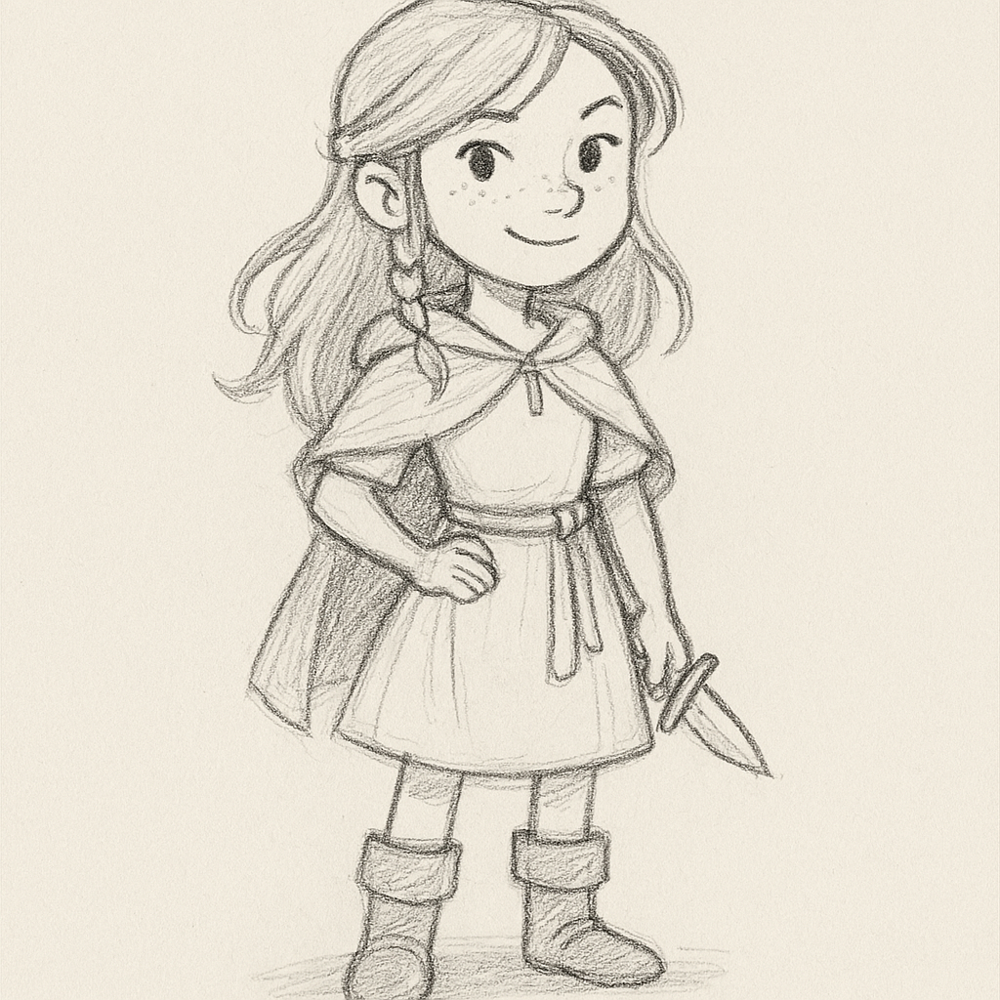
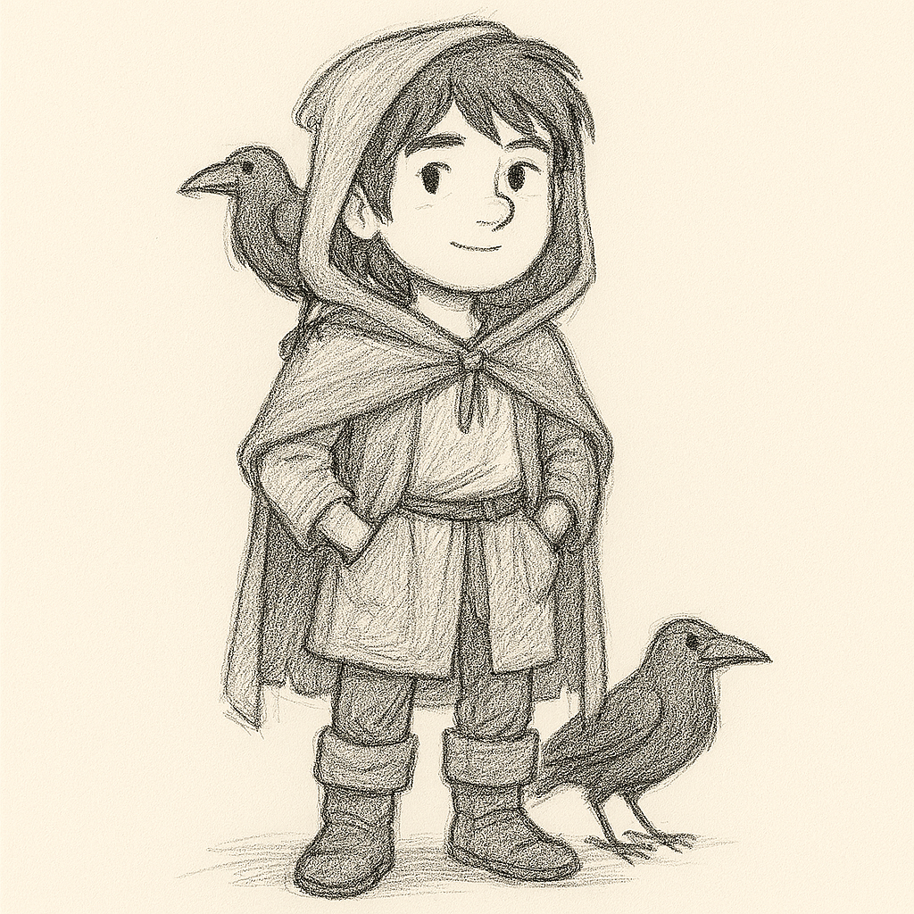

Story
Once upon a time, in a forest full of talking trees and giggling squirrels, three kids met at the edge of Eldhollow Woods.
Liora was a brave girl who used to live in a big castle. She wore shiny boots and always had a tiny dagger tucked in her sock—just in case. She was looking for her big brother, who had gone missing after chasing a mysterious light into the woods.
Bran was a quiet boy who lived in a cozy treehouse with a bunch of animal friends. He had a special secret: every time he told a fib, a little black raven popped out of nowhere and followed him around, squawking loudly. So Bran tried very hard to always tell the truth.
Tess was the youngest, and she loved inventing things. Her backpack was stuffed with blinking gadgets, spinning gears, and a robot duck named Quackers. Tess didn’t believe in magic—she thought it was just science wearing a silly hat.
One sunny morning, the three of them heard a story about a magical mirror deep in Eldhollow. It didn’t show your face—it showed who you really were inside. Liora wanted to find her brother. Bran wanted to stop the ravens. Tess wanted to prove the mirror was just a fancy trick.
So off they went, skipping past mushroom villages and hopping over sleepy trolls. The forest was full of puzzles: trees that asked riddles, rivers that sang lullabies, and butterflies that whispered secrets.
When they finally found the mirror, it didn’t show what they expected. It showed Liora’s kindness, Bran’s courage, and Tess’s big heart. They all smiled—and even Quackers gave a happy beep.
They didn’t find treasure or magic spells. But they found something better: friendship, truth, and a little bit of wonder.
And from that day on, Eldhollow wasn’t just a forest—it was their forest.
Characters
Liora
- Liora
- Age
- Role
- Personality
- Backstory
- Skills
- Bran
- Age
- Role
- Personality
- Backstory
- Skills
- Tess
- Age
- Role
- Personality
- Backstory
- Skills
Bran
Tess
Image Gallery
 